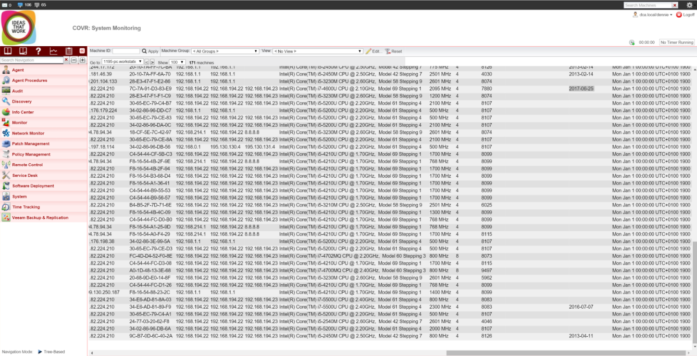

Review of software Kaseya
Tue, May 10, 2016Kaseya review
Kaseya is a networking tool used by system administrators to make their life a bit easier. The tool is created by the company Kaseya and contains several functions like remote control, monitoring, dashboards, patch management and so on. The company that uses the tool pays a monthly fee based on the number of clients and servers in that company. My first encounter with Kaseya happened at my training company where my mentor used it to monitor everyone working there. He could also help people but that didn’t happen very often.
The main feature of Kaseya which can be viewed both as a positive and a negative thing is that it runs in a browser. That means that you need to have internet connection to access it. An advantage of having the tool running in a browser is that you can access it from any place. If something goes wrong in the network and you are at home you can easily connect to Kaseya and fix it without having to go to the company. The downside of needing internet connection for Kaseya is that when your internet connection is down you are not able to access the tool anymore. I personally think that running the tool in a browser is not a good idea. I think that while being able to access the tool wherever you are is a really good thing, Kaseya also needs an option to run without the need of a browser in case there are problems with the connection.
To include a client in the tool you need to install the Kaseya agent on that client. Once a client has the agent installed the system administrator can shut down processes, take control of the client, install things and much more. A drawback of the agent is that you need to install it on every single client in your company, which can take a long time. Also, if the user has the rights he can uninstall the agent, therefore the client will be removed from the tool. As long as you don’t give the rights to uninstall there won’t be any problems with the agent.
One thing that the tool succeeds in is having regular updates. Once every few weeks the tool gets an update that takes care of bugs and other problems. It also adds new features. The updates are free for everyone who pays monthly for the tool.
